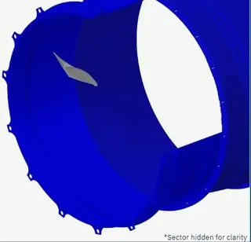
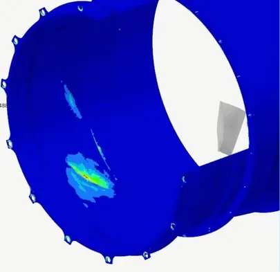

Internship · Pratt & Whitney Canada · 2024
Blade-off containment study
An LS-DYNA study showing that a compressor blade stays inside the engine case if it breaks off in flight.
- My role
- Structural FEA intern
- When
- Jan to Apr 2024
- Tools
- LS-DYNA, LS-PrePost, Altair HyperMesh, CATIA V5, SpaceClaim
- 8
- runs, each more detailed
- FAA
- certification data
- 42%
- saving in a separate composite study
The question
If a compressor blade breaks off in flight, the engine case has to contain it. During my internship at Pratt & Whitney Canada I ran a blade-off containment study on a compressor with new design changes, following FAA guidance and P&W best practice.
How I ran it
I defeatured the compressor assembly in CATIA and SpaceClaim, meshed and prepped it in Altair HyperMesh, and applied the boundary conditions for the LS-DYNA solver. Then I worked through 8 runs of increasing complexity, each one closer to the real event. Getting the inputs meant working with several departments, and I wrote the study up in a formal report and presentation.




Result
The study confirmed the blade stays contained with the new design changes, and its data went toward FAA engine certification.
The rest of the term
- Led a study in ANSYS ACP on replacing an aluminum part with a composite, which showed a 42% weight saving.
- Simulated hail and ice ingestion on a proposed composite bypass vane.
- Flagged more than 10 designs that didn't meet FAA or company guidelines, and presented 3 technical reports.